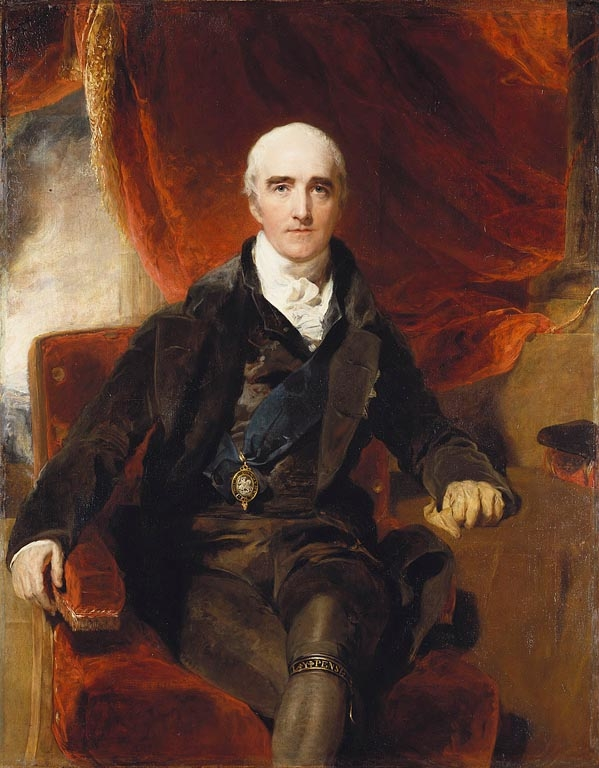
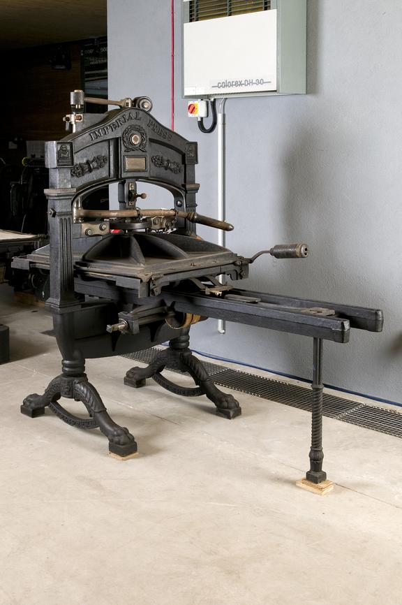
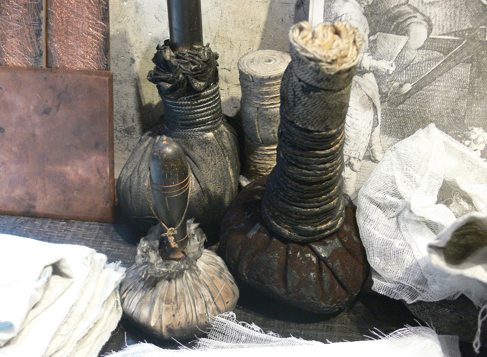

A Governor-General's Anxiety

Richard Colley Wellesley, Marquess Wellesley, painted by Sir Thomas Lawrence. He arrived in Calcutta in 1798 and, within a year, gave Bengal its first purpose-built press law.
Richard Wellesley arrived in Calcutta as Governor-General in 1798, inheriting a press landscape that had grown considerably more complicated than the one Warren Hastings had faced two decades earlier. By 1798, Calcutta had multiple English-language newspapers, an established missionary printing tradition taking shape at Serampore, and a colonial administration that had already learned, through patronage and postal privilege rather than formal law, how much a newspaper's behavior could be shaped without any dedicated press statute at all. What Wellesley brought that his predecessors had not fully confronted was a specific, acute international anxiety: revolutionary France.
The 1790s had seen the French Revolution curdle into the Terror, then into the expansionist wars of the French Republic and, from 1799 onward, Napoleon's rise. Britain and France were at war for most of this period, and French colonial and naval ambitions in the Indian Ocean were a live strategic concern for a Company administration that depended on secure sea lanes for everything from troop movements to the printing equipment discussed in earlier chapters. Wellesley, more than any Governor-General before him, treated the press as a potential vector for exactly this kind of danger: French agents, sympathizers, or simply loose talk about troop movements and fortifications, printed and circulated freely in a Calcutta newspaper with no legal check on its content whatsoever.
This is the anxiety that gives this chapter its title. Wellesley's fear was not, primarily, about a repeat of Hicky's personal attacks on a Governor-General's integrity, the problem Hastings had faced. It was a wartime fear, about strategic information leaking through an entirely unregulated print medium at a moment when Britain's global position felt genuinely contested. That distinction matters, because it explains why the law Wellesley introduced in 1799 looked so different from the ad hoc libel suits and postal bans that had constituted press control up to that point.
Wellesley's own temperament reinforced this anxiety. He arrived in India with an expansive, ambitious view of British power on the subcontinent, pursuing an aggressive policy of territorial annexation and alliance-building that brought the Company into direct military conflict with several regional powers during his tenure, including Tipu Sultan's Mysore and the Maratha Confederacy. A Governor-General actively engaged in expanding Company territory by force had every practical reason to worry about a free press publishing troop strengths, fortification details, or unflattering assessments of ongoing campaigns, in a way that a more cautious, defensively minded administrator might not have felt as acutely. Wellesley's press law, in other words, cannot be separated from his broader project of aggressive imperial expansion, of which controlling information was simply one more instrument.
The Censorship Act of 1799
Wellesley's Censorship of the Press Act, promulgated in 1799, was Bengal's first dedicated, purpose-built press law, a sharp break from the pattern examined in earlier chapters, where every prior instance of press control, Hicky's libel trials, the postal ban, even the Calcutta Gazette's official sanction, had relied on ordinary civil law, administrative discretion, or simple patronage rather than a statute written specifically to regulate newspapers. The Act required every newspaper to print, in each issue, the names of its printer, editor, and proprietor, closing off the option of anonymous or pseudonymous publication that had given earlier editors, including at times Hicky himself, a degree of protective ambiguity.
More significantly, the Act required publishers to submit all material for pre-publication review to the Secretary to the Government before it could be printed at all. This was censorship in the fullest technical sense of the word: not punishment after the fact, the model that had destroyed Hicky through libel suits brought after his articles had already reached readers, but prior restraint, a government official reviewing and approving content before a single copy left the press. The penalty for violating these requirements was severe and swift: immediate deportation, a punishment that for many editors and printers, especially those who had built lives, businesses, and families in Bengal, amounted to the harshest possible professional and personal consequence available short of imprisonment.
Twenty years after Hicky proved a Calcutta press could publish without any government permission at all, that possibility ceased to exist by law, not by informal pressure, but by a statute requiring every word to clear a government censor's desk before a single copy could be printed.On the practical effect of the 1799 Act
What an Editor Could Legally Do, Before and After 1799
The same Calcutta press landscape, on either side of a single piece of legislation.
- Publish without any government permission, sign-off, or license.
- Publish anonymously or under a pseudonym, with no legal requirement to name a printer, editor, or proprietor.
- Face consequences only after publication, through civil libel suits, postal bans, or other ad hoc administrative pressure, as Hicky did.
- Print accusations against named officials, at the real risk of a lawsuit, but without any prior censor able to stop the issue from reaching print in the first place.
- Submit all material to the Secretary to the Government for review before a single copy could be printed.
- Print the names of the paper's printer, editor, and proprietor in every issue, by legal requirement.
- Risk immediate deportation, not a lawsuit after the fact, for violating the Act's requirements.
- Face prior restraint on anything resembling Hicky's confrontational model, stopped before publication rather than punished afterward.
What the Act Actually Changed
It would be easy to read the 1799 Act as the moment Bengal's free press died and a censored one began, but the truth, as the previous three chapters have shown, is more complicated. Calcutta's press had never actually been free in any absolute sense. Hicky's paper had been shut down through improvised legal means well before any formal censorship law existed. The India Gazette and Calcutta Gazette had shaped their content around Company favor from their very first issues, without ever needing a censor to tell them what to avoid. What the 1799 Act changed was not whether the press faced control, but how visible, formal, and comprehensive that control became.
For an editor operating an officially sanctioned paper like the Calcutta Gazette, whose content had always leaned toward safe, notification-heavy material, formal pre-censorship likely changed very little in daily practice. The paper had already been self-regulating in ways that made government review a formality rather than a genuine constraint. For a hypothetical editor hoping to revive something like Hicky's confrontational model, however, the 1799 Act closed off that possibility entirely and pre-emptively, ensuring that no future Hicky could even attempt to publish an accusation against a sitting official before a censor had already stopped it from reaching print. The Act, in this sense, formalized and generalized a pattern of control that had already been operating informally through patronage and litigation, rather than inventing press control from nothing.
There is also a narrower, more specific motive worth naming plainly: Wellesley wanted the Bengal press insulated from exactly the sort of politically inconvenient reporting that had embarrassed Hastings, but his stated justification, wartime security against French intelligence gathering, gave the measure a respectability that a simple desire to avoid criticism could never have provided on its own. Wartime anxiety is a remarkably durable justification for expanding government control over information, a pattern this history will observe again in later chapters covering censorship during the 1857 uprising, the two World Wars, and Bangladesh's own Liberation War.
It is worth noting, too, that the 1799 Act's naming requirement, forcing every paper to print its printer, editor, and proprietor in each issue, addressed a specific vulnerability the government had identified in the Hicky episode. Hicky himself had never hidden behind anonymity, but the broader colonial establishment had clearly registered how difficult it would be to prosecute or deport an editor who published anonymously or under a pseudonym, a gap in accountability that the 1799 Act closed permanently and for every future publisher, not merely for anyone attempting Hicky's specific brand of confrontation. This single provision, more than the pre-censorship requirement itself, represents the Act's most lasting structural change to how Bengal's press operated, since it remained a standard feature of press regulation in the region for generations afterward.
The 1807 Extension
Wellesley's original Act targeted newspapers specifically, the format that had caused the most direct trouble for the Company establishment since 1780. In 1807, under Wellesley's successors, the law was extended to cover the full range of printed material circulating in Bengal: books, magazines, and pamphlets, in addition to newspapers. This extension reflects a colonial administration that had, by the early nineteenth century, come to see print itself, in any format, as a category requiring government oversight, not merely the specific institution of the periodical newspaper that had given Hastings and Wellesley their original headaches.
The 1807 extension arrived at a significant moment for the press landscape this history has been tracing. The Serampore Mission Press, examined in the previous chapter, was by 1807 seven years into an ambitious program of Bible translation and printing across multiple Indian languages, output that fell squarely within the newly expanded scope of the law even though it had nothing to do with newspapers, politics, or wartime security in any direct sense. There is no clear historical record in the sources available to this account of the 1807 extension being specifically aimed at Serampore's religious publishing, and the mission's location in Danish territory likely continued to provide meaningful insulation from direct Company enforcement, consistent with the previous chapter's account of why Serampore proved so durable. But the broadened law is a useful reminder that press regulation in this period was rarely narrowly targeted. Once a government builds the legal machinery to review and restrict print, that machinery tends to expand in scope over time, catching categories of publication well beyond whatever specific anxiety originally justified it.
This pattern of scope creep, a law justified by one narrow anxiety gradually expanding to cover categories of print its original drafters may never have specifically intended, recurs throughout the press law history covered across this site, from the Vernacular Press Act's later exemption and re-inclusion of English papers, to the Special Powers Act's broad application well beyond its stated security purposes after 1974. The 1807 extension is this history's earliest documented instance of that pattern, and it is worth flagging here precisely because it establishes a template that colonial and postcolonial governments alike would return to repeatedly over the following two centuries.
Bengal's Press Law, Entry by Entry
This widget is designed to grow. Every chapter in this history that logs a new press law adds its entry here, building toward a full sitewide timeline running from Wellesley's 1799 Act to the Digital Security Act of 2018. Click an entry to expand it.
Behind Every Printed Page

An Imperial printing press, made by J. Cope and Sherwin of London around 1830. Later and more refined than the wooden common presses Hicky and his contemporaries used, it still relies on the same basic hand-operated mechanism this section describes.
Every chapter in this Part has discussed printing as though the physical act of producing a page were simple once a press existed. It was not. Behind every newspaper, gazette, and Bible translation examined so far sat a demanding, labor-intensive mechanical process that constrained what any press, however well funded or well connected, could actually produce in a given week. Understanding that process is not a detour from this history. It is a necessary corrective to any account that treats printing purely as a matter of law, money, and editorial courage, when it was, in equal measure, a matter of physical craft.
A compositor began with a type case, a shallow wooden tray divided into dozens of small compartments, each holding a supply of a single letter, numeral, or punctuation mark cast in metal. Capital letters were traditionally stored in an upper case and lowercase letters in a case positioned below it, the literal physical origin of the terms uppercase and lowercase still used today. Working from a handwritten or previously printed manuscript, the compositor picked individual pieces of type letter by letter, right to left and upside down, arranging them in a handheld composing stick to form each line of text, a task demanding both literacy and considerable manual dexterity, performed at real speed by a skilled compositor but always, fundamentally, a one-letter-at-a-time process.
Once enough lines had been composed, they were transferred into a larger frame called a forme and locked tightly into place with wooden or metal wedges, ensuring that hundreds of individual pieces of type would not shift or fall during printing. The forme was then inked, in this period typically using ink balls, leather-covered pads stuffed with wool or horsehair, dabbed by hand across the raised surface of the type before each impression, a full century before mechanized inking rollers became standard. Paper, which printed far more cleanly when slightly damp, was typically moistened in advance and stacked under weight to achieve an even dampness before being fed into the press sheet by sheet.
The press itself, in this period, was what printers called a common press: a large wooden and iron mechanism operated entirely by hand, in which a printer positioned a dampened sheet against the inked forme and pulled a lever to bring a flat plate called a platen down onto the paper with enough even pressure to transfer the inked image cleanly. A skilled two-person team, one inking, one operating the press, might produce a few hundred single-sided impressions in a working day, a output figure worth holding in mind against Hicky's reported circulation of roughly four hundred copies a week. Printing a single issue of an eighteenth century Calcutta newspaper was not a matter of flipping a switch. It was a full day or more of sustained, physically demanding, highly skilled manual labor for every single issue, before a single copy had even left the shop for delivery.
Inside an Early Calcutta Print Shop
The diagram below walks through the six stages a page moved through inside a print shop like Hicky's, the India Gazette's, or the Serampore Mission's, from a compositor selecting type through to a finished, dried sheet ready for a reader. Click each station in sequence to see what happened there and why it mattered.
Six Stages of a Printed Page
Click a station to read what happened there. The stages run left to right, following the order a page actually moved through the shop.
Click Type Case to start the sequence from the beginning, or jump to any stage.
The Cost of Getting It Wrong

Surviving leather ink balls, stuffed with wool or horsehair, on display at the Rembrandt House Museum in Amsterdam. Pairs like these were dabbed by hand across a locked forme before every single impression, and, like the press itself, had to be replaced or repaired as part of the same fragile supply chain this section describes.
None of the equipment described in the previous two sections was cheap, locally abundant, or easily replaced, a fact that made every early Calcutta press financially fragile in ways that compounded the political fragility examined earlier in this Part. Presses, type, and specialized printing paper had to be imported from Europe for most of the eighteenth century, traveling the same three-to-five-month sea route from London described in this history's second chapter, with all the cost, delay, and uncertainty that voyage implied. A damaged press, a lost shipment of type, or a paper shortage could halt publication for months in a way no amount of editorial courage or official patronage could fix, because the physical inputs simply did not exist locally yet.
This began to change modestly toward the end of the eighteenth century. In 1786, Daniel Stuart and Joseph Cooper, proprietors of Calcutta's Chronicle Press, established the city's first type foundry, allowing at least some replacement type to be cast locally rather than imported from Britain. By 1789, the same foundry had expanded its capability to cast Nastaliq and Devanagari type as well, serving the Persian and Hindustani-language advertising and administrative material that a genuinely multilingual colonial capital required. Local ink production also developed gradually over the following decades, though for much of this period, high quality printing ink, like type and paper, remained an imported and expensive input.
These physical constraints shaped press economics in ways that are easy to overlook next to the more dramatic political battles this history has focused on. A newspaper's survival depended not only on avoiding libel suits and staying within whatever the law of the moment permitted, but on maintaining a reliable, affordable supply chain for the raw physical materials of printing itself, an ordinary, unglamorous business problem that bankrupted printers just as thoroughly as any government crackdown could. Hicky himself, before his legal troubles ever began, had first needed to solve exactly this problem: acquiring type, ink, and a working press through his own savings and the printing knowledge he had picked up in London, described in this history's fourth chapter. Every newspaper examined in this Part, independent, official, or missionary, had to solve the same basic mechanical and financial problem before it could solve any political one.
Regulation and Machinery, Together
This chapter closes Part I of this history by holding two very different kinds of constraint side by side. Wellesley's 1799 Censorship Act and its 1807 extension represent the formal, legal apparatus of press control, a genuine turning point in how directly and comprehensively Bengal's colonial government could restrict what got printed, closing off the space that had allowed Hicky's brief, chaotic experiment in independent journalism to exist in the first place. But that legal apparatus operated on top of, and was never separate from, the physical and economic realities of eighteenth and early nineteenth century printing: imported presses, hand-cast type, hand-inked forms, and a supply chain stretched across a three-to-five-month ocean voyage.
Neither constraint, legal or mechanical, fully explains Bengal's early press history on its own. A press could theoretically have satisfied every requirement of Wellesley's 1799 Act and still failed for want of type or paper. A press with unlimited access to imported equipment could still be shut down, as Hicky's was, by legal action that had nothing to do with any formal censorship statute. Understanding the first seven chapters of this history requires holding both forces in view simultaneously: what the law permitted, and what the physical craft of printing actually made possible, week after week, issue after issue.
It is worth a final observation before this Part closes. Every institution examined across these seven chapters, Hicky's brief and doomed independence, the India Gazette and Calcutta Gazette's official caution, the Bengal Hurkaru's commercial persistence, and the Serampore Mission's insulated religious purpose, operated under the exact same mechanical constraints described in this chapter, the same imported presses, the same hand-set type, the same three-to-five-month supply line from London. Political and institutional strategy could determine whether a paper survived a lawsuit or won official favor. It could not shorten the time a compositor needed to set a line of type, or speed up a ship crossing the Bay of Bengal. Some limits on Bengal's earliest press were never about power at all.
Part II of this history turns to a genuine transformation on both fronts at once. In 1818, the Serampore Mission's Samachar Darpan became Bengal's first Bengali-language newspaper, a milestone this Part has referenced repeatedly without yet examining directly. Its arrival depended on everything covered across these seven chapters: Calcutta's administrative concentration, its trade network, Hicky's proof that an independent press could exist at all even briefly, the official and missionary models that proved more durable, the legal framework Wellesley had by then imposed, and the physical technology of Bengali movable type that Panchanan Karmakar and Charles Wilkins had made possible back in 1778. Part II picks up that story, and with it, the beginning of a genuinely Bengali-language press.